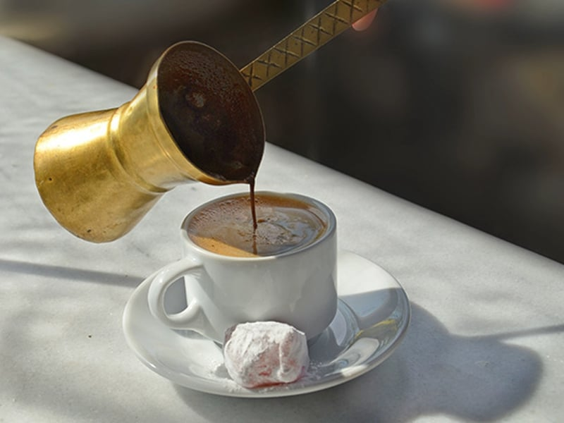

The Best Traditional Greek Coffee

Description
Among the strogest of all brewed coffee, traditional Greek Coffee is sure to give you the caffeine kick you need to get you through your day! Brewed using a traditional Greek Briki, you'll feel like you're back in the motherland while sipping this!
Ingredients
- Greek Briki
- A stove or hot plate element
- Ground Greek Coffee
Steps
- Fill your Briki half full with water
- Add 1 1/2 - 2 scoops of ground Greek Coffee to your Briki
- Place the Briki on the stove or hot element, and wait for it to slowly boil
- Once nearly boiling at the top, remove Briki from stove
- Pour the coffee from the Briki into a small coffee cup of your choice
- Add sweetner to taste
- Sip slowly, while pondering all of lifes biggest questions.